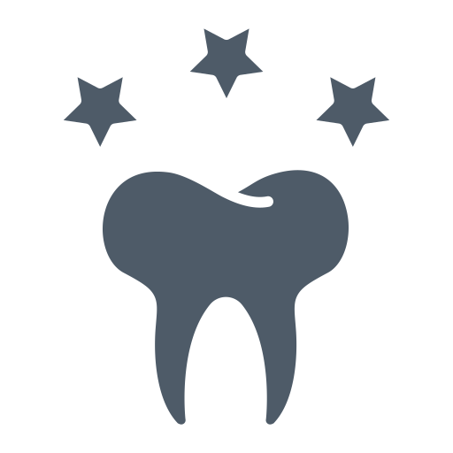
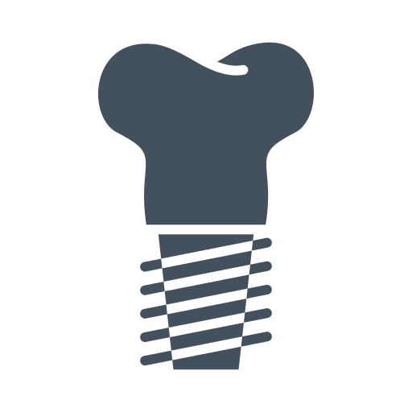
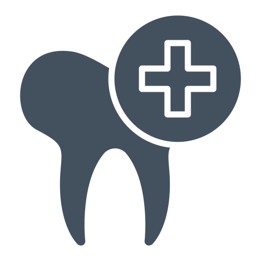
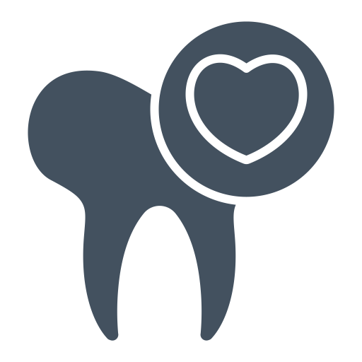

Dental Services



AESTHETIC DENTISTRY
Teeth Whitening
Porcelain Veneers
Composite Veneers
Composite Bonding
Teeth Whitening
Porcelain Veneers
Composite Veneers
Composite Bonding
IMPLANT DENTISTRY
Single / Multiple Implants
Implant Supported Denture
Sinus Lifting
Bone Grafting
Single / Multiple Implants
Implant Supported Denture
Sinus Lifting
Bone Grafting
ORTHODONTIC
Invisalign Clear Aligners
Metal Braces
Ceramic Braces
Damon Braces
Invisalign Clear Aligners
Metal Braces
Ceramic Braces
Damon Braces
RESTORATIVE DENTISTRY
Dental Crowns
Dental Bridges
Inlays / Onlays
Composite Fillings
Dental Crowns
Dental Bridges
Inlays / Onlays
Composite Fillings

GENERAL DENTISTRY
Scaling & Polishing
Root Canal Treatment
Tooth Extraction
Wisdom Tooth Sugery
Scaling & Polishing
Root Canal Treatment
Tooth Extraction
Wisdom Tooth Sugery
PERIODONTIC DENTISTRY
Deep Scaling & Root Scaling
Periodontal Plastic Sugery
Soft Tissue Grafting
Tissue Regeneration
Gum Contouring
Deep Scaling & Root Scaling
Periodontal Plastic Sugery
Soft Tissue Grafting
Tissue Regeneration
Gum Contouring
DIAGNOSTIC
Routine Check Up
Full Mouth Panaromic X-rays
3D CBCT X-rays
Intraoral Photographs
Cephalometric Radiograph
Routine Check Up
Full Mouth Panaromic X-rays
3D CBCT X-rays
Intraoral Photographs
Cephalometric Radiograph
EMERGENCY
Dislodged Crown & Bridges
Dental Abscess Treatment
Lip / Soft Tissue Injuries
Post Extraction Bleeding
Dislodged Crown & Bridges
Dental Abscess Treatment
Lip / Soft Tissue Injuries
Post Extraction Bleeding
Wong & Sim Dental Surgery
Summerton, Queensbay
Monday – Wednesday | 10 am – 8 pm
Thursday | 10 am – 6 pm
Friday |10 am – 8 pm
Saturday | 10 am – 6 pm
Sunday | 2 pm – 5 pm
110-02-26 Summerton
Persiaran Bayan Indah
11900 Pulau Pinang.
04 - 3763770
Wong & Sim Dental Surgery
Pulau Tikus, Georgetown
Monday – Friday | 9 am – 6 pm
Saturday | 9 am – 5 pm
Sunday | Closed
277, Jalan Burma
10350 Georgetown,
Penang.
04 - 2286818